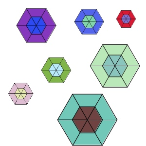
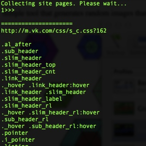
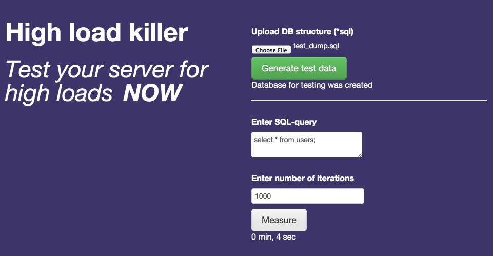
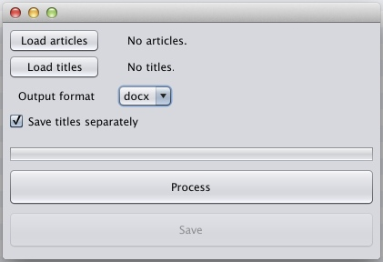

Calendar widget
The widget is written using JavaScript language.
My passion for software development stemmed from my desire to be helpful. I am enjoy what I am doing and I believe that I can help you to reach your goals.
The widget is written using JavaScript language.
Simple tool that generates random images that have snowflake shape. Written using Java language. Can generate hundreds of images per second.
Tool that scans your site for css styles that are not used on pages. The tool has two modes: full scan and partial scan. If full scan is switched on the tool scans entire website. Written using Java language and Apache Maven build tool.
Cut-and-dried framework for analysis highload on your web project. Framework includes database generator, big queries count emulator and statistics of queries execution. Written using Java language, Apache Maven build tool and MySQL RDBMS.
Technologies used:
My client wanted a desktop application that formats articles(that are stored in zip files) and saves them as .txt of .docx files. User can save the result of processing to directory he wants.
I created Java application using NetBeans IDE, Swing and docx4j library.

Social activity